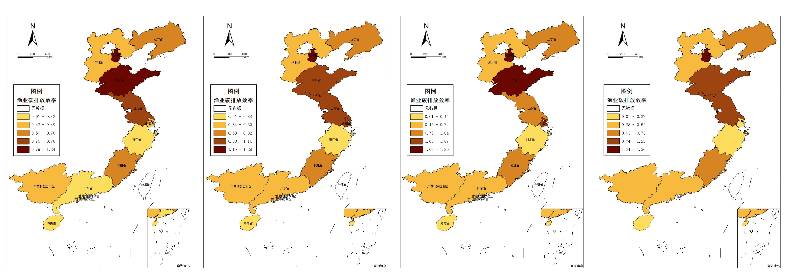

Guo Xingyue
郭星玥
MSc in E-Commerce and Logistics Technology
The Chinese University of Hong Kong (CUHK)
I am Guo Xingyue, a postgraduate student at The Chinese University of Hong Kong (CUHK). My research focuses on strategic management, social network analysis, and algorithmic decision optimization.
Since 2025, I have been collaborating with Prof. Andy Back at The University of Hong Kong on projects exploring executive communication and M&A conference calls. This collaboration extends beyond the traditional research assistant role — we are co-developing manuscripts that investigate executive network effects and information diffusion.
I also assist a PhD candidate in CUHK's supply chain research group as a student helper, contributing to data visualization and analysis of large-scale trade datasets, integrating quantitative methods with management research.
My earlier undergraduate research at China University of Petroleum (East China) covered social network analysis, system dynamics, and algorithm optimization. I developed ERGM/TERGM models, dynamic simulations, and optimization algorithms in Python and MATLAB for logistics and resource allocation.
In conclusion, I aim to understand how information, decisions, and relationships spread through executive and corporate networks.
Education & Interests
Research Interests
- Strategic Management
- Social Network Analysis
- Executive Behavior and M&A
- Algorithm Optimization
- System Dynamics
Education
-
The Chinese University of Hong Kong (CUHK)
MSc in E-Commerce and Logistics Technology
Aug 2025 - Present -
China University of Petroleum (East China)
Bachelor of Management in Engineering Management
Sept 2021 - Jun 2025
GPA: 86.7/100 | Ranking: 14/82
Research Experiences
Research Collaboration, The University of Hong Kong
Collaborating with Dr. Andy Back on projects examining executive behavior, analyst interpretation, and network imitation in M&A contexts. Responsibilities include dataset construction, text analysis of conference call transcripts, and empirical modeling of market and organizational responses.
Student Helper, CUHK Supply Chain Research Group
Assisting in data visualization and preprocessing of large trade and logistics datasets. Experience includes data cleaning, exploratory analytics, and preparing materials for academic presentation and visualization dashboards.
Undergraduate Research Projects
- Social Network Analysis: Built spatial association networks using ArcGIS, Ucinet, and Gephi.
- System Dynamics: Conducted dynamic feedback modeling using Vensim.
- Algorithm Optimization: Applied operations research techniques in Python and MATLAB to optimize logistics and resource allocation.
Publications & Working Papers
Manuscripts in Preparation:
-
Study on the Characteristics and Influencing Factors of the Spatial
Correlation Network of Carbon Emission Efficiency in China's Marine Fisheries
Establishes a spatial network for carbon emissions in marine fisheries and investigates its underlying mechanisms, offering policy insights.
Research results
Click the image below to enlarge it 👇
My Research Chart (billboard.js)
Internship Experiences
-
Beijing Yunong High Quality Agricultural Products Planting Co., Ltd.
Supply Chain and Logistics Department Intern | Jul – Sept 2024
Managed internal supply chain operations, monitored product inflow and outflow, and coordinated supplier schedules. Conducted warehouse and cold-chain management, optimized product allocation, and performed loss rate and cost analysis to improve logistics efficiency. -
China Construction First Group Co., Ltd.
Project Management Intern | Jun - Aug 2023
Participated in the life-cycle management of construction projects, conducted cost estimation and schedule coordination, and developed automated data scripts to improve logistics tracking and project efficiency.
Hobbies & Personal Interests
Beyond research, I embrace creativity, rhythm, and balance. Music and sports help me focus, while games challenge my logic and imagination — all of which inspire my research mindset.
🎶 Flute & Drums
Music gives me rhythm, patience, and expression - a balance of structure and creativity.
🏊♀️ Swimming
Water helps me reset my mind, think clearly, and stay disciplined through routine training.
🎮 Gaming
Games sharpen my problem-solving skills and remind me that strategy and creativity can coexist.
Work-Life Balance


Contact
| Item | Details |
|---|---|
| guoxy092025@163.com | |
| Phone | +86-15201537955 |
| ggneversleep | |
| CV | Download CV |